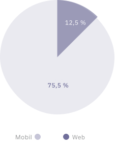

Návštevnost webu počas pretekov z mobilných zariadení

+ Vytvorit mobilnú aplikáciu pre iOS/Android
Návštevnost webu podla krajín a lokalít

+ Umožnit sledovat priebeh všetkým
Prieskum medzi užívatelmi na sociálnych sietach

+ Najžiadanejšia funkcia je GPS tracking